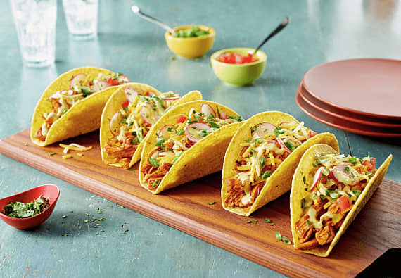

Tacos

Description
Some sick vegetarian tacos just like abuela used to make. These tacos feature fresh, flavorful ingredients. Feel free to substitute the hard shells for soft corn tortillas for a more authentic Taco!
Ingredients
- 3 Taco Shells (or soft shell)
- 1 avocado
- 2 tablespoons sour cream
- 1 cup refried beans
- 1 cup cotija cheese
Steps
- Preheat oven to 350 degrees F.
- Place taco shells in the oven to warm them for 6 minutes.
- Heat refried beans in a pot until warm.
- Assemble tacos and enjoy!